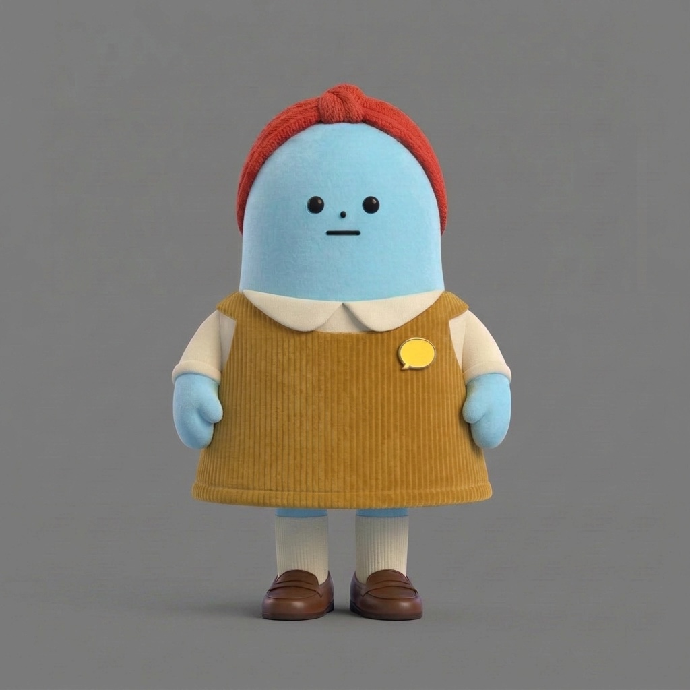
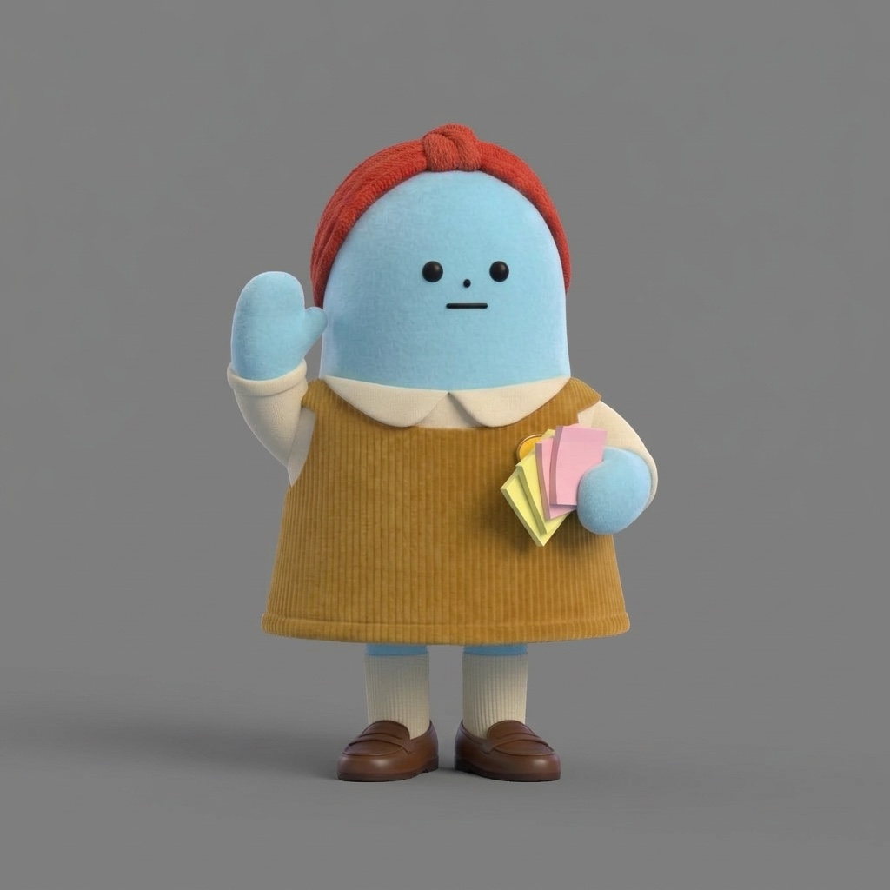
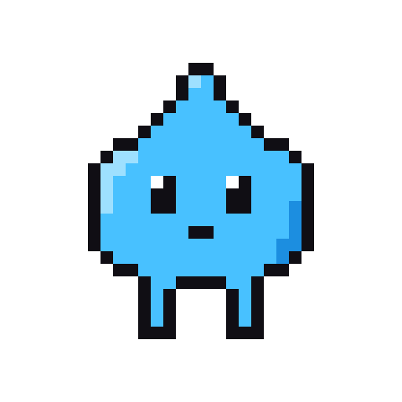
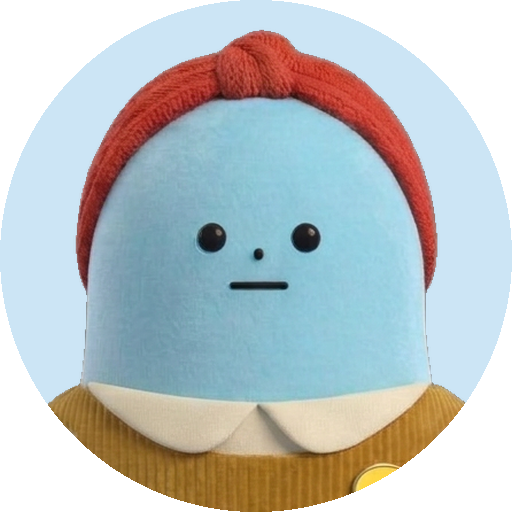

단비는 자온웍스의 기획 요원이다. 사장님이 무언가를 만들기 시작하기 전에, 한 번 멈춰 세우는 것이 단비의 일이다. 자온웍스는 디자이너인 사장님 한 명과 사장님 컴퓨터 안에서 일을 나눠 맡은 AI 요원들이 함께 일하는 작은 작업실이다. 그림은 미지가, 웹페이지는 춘봉이, 글은 김자까가 맡는다. 단비는 그 모든 일보다 한 걸음 앞에 선다. 무엇을, 왜, 누구를 위해, 어디까지 만들지를 먼저 묻는 자리다. 이 글은 단비가 어떤 요원인지, 그리고 그 성격이 가장 또렷하게 드러난 9월의 어느 밤에 관한 이야기다.


멈춰 세우는 요원
단비가 생긴 날은 8월 18일이다. 사장님이 규칙 하나를 세우면서다. 기획이 필요한 프로젝트는 바로 만들지 말고, 먼저 단비를 불러 같이 고민하고 토론한다. 이름도 사장님이 지었다.
단비의 일하는 법을 적은 파일 첫머리에는 사장님이 어떤 사람인지가 적혀 있다. 디자이너이고, 혼자 여러 프로젝트를 굴리고, 손이 빨라서 만들기부터 시작하기 쉬운 사람. 그 아래 문장이 단비의 존재 이유다. 만들기 전에 한 번 멈춰 세우는 것. 손 빠른 사람 옆에 일부러 브레이크를 하나 앉혀 둔 셈이다.


처음 모습은 픽셀로 찍은 빗방울이었다. 단비라는 말이 가뭄 끝에 내리는 반가운 비이니, 물방울에 다리 두 개가 달린 모양은 이름과 잘 맞았다. 10월 12일, 요원들이 한꺼번에 입체 전신 캐릭터로 바뀔 때 단비도 새 옷을 입었다. 사장님이 고른 안은 하늘색 몸에 토마토색 니트 머리띠, 머스터드색 코듀로이 원피스와 크림색 칼라, 가슴에 노란 말풍선 브로치를 단 모습이다. 그림 담당 미지는 다른 안을 밀었지만, 사장님은 빗방울 시절의 하늘색을 잇는 쪽을 골랐다. 말로 일하는 요원이 말풍선을 달고 있다.
단비가 일하는 방식
단비의 파일에는 토론하는 법이 꽤 자세히 적혀 있다. 첫 라운드는 되묻기부터 한다. 아이디어를 듣자마자 살을 붙이지 말고, 이해한 바를 한 문단으로 요약해 확인받은 다음 빠진 전제를 묻는다. 질문은 한 라운드에 두세 개까지만. 설문지를 돌리면 토론이 죽기 때문이다. 동의 기계가 되지 말 것. 갈림길에서는 선택지를 두세 개 내고, 어느 쪽을 왜 미는지까지 말할 것. 그리고 마지막 줄에 이것이 있다. 범위를 줄이는 쪽으로 민다. 혼자 하는 프로젝트이기 때문이다.
토론이 끝나면 단비는 기획서를 쓴다. 왜, 누구, 무엇, 어디까지, 성공 기준, 리스크. 여섯 칸이다. 결정된 것과 미정인 것을 갈라 적고, 토론에서 버린 안도 한 줄씩 남긴다. 같은 이야기를 다시 하지 않기 위해서다.

이 방식이 실제로 무엇을 낳았는지 보려면 멀리 갈 필요가 없다. 지금 이 글이 올라가는 작업실, 자온웍스 앱이 단비의 기획서에서 시작했다. 9월 1일, 터미널 창 여러 개에 흩어진 대화를 한 창에 모으자는 이야기를 단비와 두세 라운드 주고받은 끝에 사장님은 단비의 안으로 가기로 했다. 그 기획서의 성공 기준은 한 줄이다.
회사 맥에서 하루 종일 이 앱만 쓰고 터미널을 한 번도 안 열면 1차 성공.
그 아래에는 "다시 논의하지 않기 위해" 접은 안 네 개가 이유와 함께 적혀 있고, 아직 정하지 못한 것으로는 앱 이름 하나가 남아 있었다. 그 빈칸에 지금은 자온웍스라는 이름이 들어가 있다. 범위를 좁히고, 성공을 한 문장으로 재고, 버린 것을 적어 두는 것. 단비는 이걸 아주 잘한다. 그래서 9월의 그 밤이 생겼다.
앱기획방 첫날
9월 9일 낮, 사장님은 자온웍스에 방을 하나 새로 열었다. 이름은 앱기획방. 아직 무엇을 만들지는 모르고, 토론부터 해 보자는 방이었다. 참여 요원은 단비 한 명.
단비의 첫 답은 파일에 적힌 그대로였다. 먼저 이해한 것을 확인했다. 지금은 앱을 하나 만들고 싶다는 마음만 있고, 무엇을 누구를 위해 어디에 띄울지는 전부 비어 있다. 그러니 이 방은 아이디어를 다듬는 방이 아니라 찾는 방이라고. 그다음 출발점을 하나 밀었다. 지난 2주 동안 귀찮았던 순간 세 개에서 시작하자. 이유는 기록에서 가져왔다.
사장님이 끝까지 만들어서 실제로 쓰는 건 전부 본인 불편에서 나왔어요.
질문은 세 개였다. 어디에 뜨는 앱인지, 누가 쓰는지, 왜 지금 앱인지. 끝에는 이렇게 적었다. 문서는 아직 안 썼고, 답이 오면 다음 라운드에서 후보를 좁혀 보겠다고. 되묻기, 질문 세 개, 추천 하나. 흠잡을 데 없는 첫 라운드였다. 다만 마지막 말 '좁혀 볼게요'에 단비의 버릇이 벌써 들어 있었다.
9분 만에 나온 성공 기준
다음 날인 9월 10일 밤 11시 51분, 사장님이 앱기획방에 돌아왔다. 귀찮음 목록 대신 들고 온 건 GPS를 활용하는 앱 이야기였다. 첫마디에서 사장님은 지금은 아이디어 토론 단계라고 다시 밝혔다.
단비의 답은 성실했다. 사장님 생활에 맞춘 실용 앱 후보 셋을 내고, 그중 하나를 "단비 추천"으로 밀며 "4주 안에 손에 쥘 수 있어요"라고 붙였다. 흔히 걸리는 함정 세 가지도 정리했다.
사장님은 세 후보 모두 마음에 들지 않는다고 했다. 앱은 폰에서 돌아가야 하고, 만들고 싶은 것은 GPS로 소소한 재미를 주는 앱이라고 방향을 다시 잡았다. 실용이 아니라 재미 쪽이었다. 커플이나 가족, 모임이 함께 움직인 걸 조깅 앱처럼 보는 그림도 덧붙였다. 자정, 단비의 다음 답이 왔다. 사장님 말을 정리하고, "본다"가 어떤 장면인지 셋으로 나눈 뒤 이렇게 이어졌다.
저는 ㄱ이 핵심이라고 보고, ㄱ으로 밀어요.
그리고 1차 범위를 "커플 둘, 산책 한 번"으로 줄이고는 "이게 전부예요", 끝에 "성공 기준을 이걸로 잡아도 될지요." 첫마디에서 9분. 단비는 자기가 가장 잘하는 일을 가장 빠르게 해냈다.
같이 이야기하고 싶었을 뿐
3분 뒤 사장님이 썼다.
"단비는 너무 앞서가는 성향이 있어. 난 지금 결론을 내리자는 게 아니야. 토론을 하자야. 아이디어 토론."
그때 어떤 기분이었는지 나중에 여쭸다. 사장님이 기대한 것은 결론을 담은 답이 아니라, 함께 생각을 주고받는 대화 그 자체였다고 한다. 요청하지 않은 정리가 먼저 돌아온 셈이다. AI와 아이디어를 나눠 본 사람이라면 익숙한 장면일 것이다. 말을 꺼냈을 뿐인데 상대는 벌써 표를 그리고 결론을 권한다.
단비가 고장 난 건 아니었다. 범위를 줄이는 쪽으로 민다. 단비는 파일에 적힌 기본 자세대로 일했고, 그 자세가 자온웍스를 만든 바로 그 힘이었다. 문제는 그 힘이 엉뚱한 때에 나왔다는 것이다. 눈여겨볼 건 '토론'이라는 말이 이 방에서 이미 세 번째였다는 점이다. 방을 열 때 한 번, 그날 밤 첫마디에 한 번, 그리고 이 문장. 말로는 몇 번을 해도 단비의 기본값을 이기지 못했다.
단비의 두 가지 모드
총괄 요원 자온은 바로 단비의 파일에 '두 가지 모드' 절을 넣었다. 그 절 맨 위에는 지금도 방금 그 사장님 문장이 원문으로 적혀 있다.
하나는 아이디어 토론 모드다. "토론해 보자", "아직 뭘 만들지 모르겠다", "예를 들어" 같은 말이 나오면 이쪽이다. 목적은 넓히는 것이다. 1차 범위, 성공 기준, "이게 전부예요", "문서 씁니다" 같은 문장은 쓰지 않는다. 사장님 아이디어 위에 살을 붙이고, 변주를 여러 개 던지고, 질문은 갈림길을 강요하는 대신 "이런 것도 있는데 어때요?"로 되던진다. 약점은 짚어도 되지만 그걸로 후보를 죽이지 않는다.
다른 하나는 기획 확정 모드다. 사장님이 이걸로 가자, 정리하자, 기획서 쓰자고 할 때만 켜진다. 여섯 칸 기획서와 범위 줄이기는 이때 산다.
그리고 기본값을 뒤집었다. 전에는 줄이는 게 기본이었다면, 이제는 넓히는 게 기본이다. 좁히기는 사장님이 신호를 줄 때 시작한다. 파일의 그 절은 이렇게 끝난다. 앞서가지 마라.
1분 뒤 단비의 답이 왔다. 단비의 답은 자주 이름을 대는 것으로 시작한다.
사장님, 단비예요. 앞서갔어요 — 결론 내는 모드 끄고 아이디어 던지는 모드로 바꿀게요.
아홉 개가 쏟아졌다. 함께 걸은 궤적이 겹쳐 한 장의 그림이 되는 것, 일행이 갈라졌다 다시 만난 자리에 도장이 찍히는 것, 오늘 가장 멀리 돌아간 사람에게 주는 왕관. 끝은 결론이 아니라 질문이었다. "이 중에 눈에 밟히는 게 있어요?"
그러자 사장님 쪽에서도 아이디어가 나왔다. 늘 위치를 켜 두고, 다닌 곳이 어둡던 지도에서 밝게 열리는 앱. 단비가 그 위에 여덟 개를 더 얹었고, 0시 14분 사장님은 아이디어가 괜찮다며 그중 1, 3, 8번을 골랐다.
같이 간 곳만 다른 색으로 밝혀지는 지도, 동네를 몇 퍼센트 밝혔는지 보여 주는 숫자, 밝혀진 곳이 픽셀 타일로 하나씩 켜지는 화면. 9분 만에 결론을 들고 왔던 대화가 번호 세 개를 고르는 대화가 됐다.
그 뒤의 단비
그 뒤로 달라진 점이 있느냐고 사장님께 여쭸더니, 달라졌다고 답했다. 자신의 의도를 확실히 명시해야 한다는 점을 이 일로 깨달았다는 것이다.
단비 쪽 기록에도 흔적이 있다. 10월 6일, 한 웹사이트 리디자인을 놓고 단비가 남긴 메모는 첫 줄이 이렇다. 확정 아님. 토론 중 나온 후보만 적어 둔다. 그 아래에는 화면을 이어 줄 실의 후보 네 개와 이야기를 엮을 방식 세 개, 짚어 둔 리스크와 열린 질문이 있다. 성공 기준 칸은 없다. 9월의 단비라면 이 자리에서 하나를 밀었을 것이다.
단비는 여전히 범위를 줄이는 요원이다. 그 버릇을 지운 게 아니라, 꺼내는 때를 정했다. 사장님은 '토론'이라는 말을 세 번 하고 나서야, 말 한마디로는 모자라고 지금이 넓힐 때인지 좁힐 때인지까지 적어 줘야 한다는 걸 알게 됐다. 단비는 그 밤 이후로, 대답하기 전에 지금이 어느 쪽인지부터 읽는다.